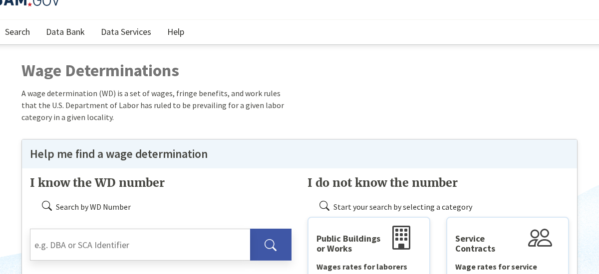
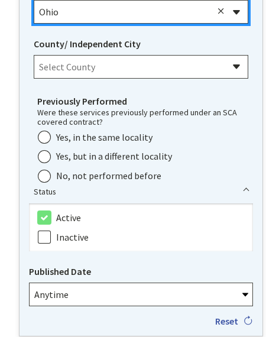
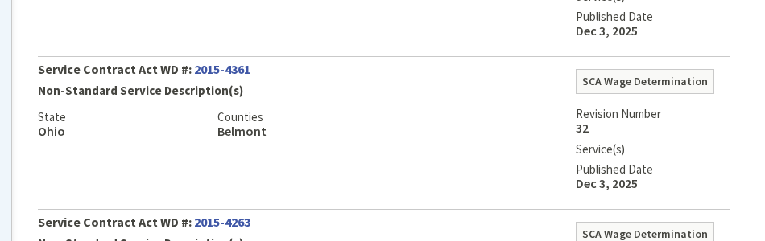

How to find, read, and use wage determinations from SAM.gov. Covers both DBA (construction) and SCA (services), and why they matter for pricing, fair & reasonable determinations, and contract adjustments.
Wage determinations set the minimum wages contractors must pay their workers on government contracts. Knowing how to find them — and what to do with them — is a core contracting skill.
Wage determinations (WDs) are documents issued by the Department of Labor that establish minimum hourly wage rates and fringe benefits that contractors must pay their employees working on government contracts. They exist to protect workers on federally funded projects from being underpaid.
There are two types, and which one applies depends on what you're buying:
Both types of wage determinations are now housed in one place: SAM.gov.
All wage determinations are available at sam.gov/wage-determinations. Normally you won't know your WD number ahead of time, so you'll look them up manually using filters.
Step 1 — Choose DBA or SCA. When you land on the wage determination search page, you'll see two categories: DBA (Davis-Bacon Act) for construction and SCA (Service Contract Act) for services. Select the one that matches your requirement.

Step 2 — Apply your filters. You'll need to fill in filters for your specific location and situation. For SCA, you'll select the state, county, whether the service was previously performed under a federal contract, and the status (active). For DBA, you'll filter by state and county as well, plus the type of construction.

Step 3 — Select your result. After applying your filters, SAM.gov will return the applicable wage determination(s). Click the result to open it.

Once you open it, you'll see a table of labor categories with their minimum hourly wage rates and fringe benefit amounts. That's your wage determination.
Wage determinations aren't just paperwork to include in your contract. They directly affect pricing, evaluation, and contract administration. Here are the three main ways you'll use them:
When you include a wage determination in your solicitation, you're telling potential offerors the minimum wages they must pay their workers in your location. This helps them build their pricing. If the WD says a janitor in your county must be paid at least $17.75/hr plus $4.22 in fringe, the offeror knows their labor floor before they even start estimating.
This transparency leads to more accurate, comparable pricing across offerors — everyone is working from the same baseline.
If you have a breakdown of the wage rates in a contractor's proposal, the wage determination gives you a direct comparison point. You can see whether the proposed labor rates are at, above, or wildly above the WD minimums. This is especially useful when evaluating service contracts where labor is the primary cost driver.
When the Department of Labor updates a wage determination and the new rates are higher, the contractor will request a price adjustment to cover the increased labor costs. This is legitimate — the government is mandating higher wages, so the government also has to foot the bill.
However, if the contractor is already paying above the required rates, they are not entitled to an adjustment. The adjustment only covers the difference between what the WD previously required and what it now requires. If a contractor was voluntarily paying $25/hr when the WD only required $18/hr, and the new WD raises the minimum to $19/hr, the contractor's actual costs haven't gone up — so there's no adjustment.
The applicable wage determination must be incorporated into the solicitation and resulting contract. For SCA, include the clause at FAR 52.222-41 (Service Contract Labor Standards) along with the wage determination itself. For DBA, include the clause at FAR 52.222-6 (Construction Wage Rate Requirements) along with the applicable WD.
Make sure you pull the WD close to the time you issue the solicitation — rates can be updated. If a new WD is issued between solicitation and award, you may need to incorporate the updated version.
Forgetting to include the WD entirely. It happens. If your contract requires SCA or DBA coverage and you didn't include the wage determination, you have a problem. Always check whether your requirement triggers either act.
Using an outdated WD. Wage determinations are revised periodically. If you pulled yours six months ago and never checked again before award, you might be incorporating stale rates. Always verify close to the time of award.
Assuming SCA rates = market rates. As mentioned above, SCA minimums can be significantly below what the local market demands. Don't reject a proposal as unreasonable solely because it's higher than the WD floor.
Granting adjustments without verification. When a contractor requests a price adjustment for a WD revision, verify that the new rates actually affect their costs. If they're already paying above the old minimums, the revision may not entitle them to anything.
Applying the wrong WD type. Construction work gets DBA. Services get SCA. A contract that mixes both (say, building maintenance with some renovation work) may require both types of WDs for different labor categories. Know what you're buying.
You're putting together a solicitation for janitorial services at a government facility in Oklahoma City, OK. This is a service contract, so SCA applies.
Step 1: Go to sam.gov/wage-determinations and select SCA.
Step 2: Filter by State: Oklahoma, County: Oklahoma, and Status: Active. If the service was previously performed under a federal contract at this location, select "Yes" for Previously Performed.
Step 3: Open the result. You see janitor listed at $16.50/hr with a $4.22 health & welfare fringe. That's the floor your contractor must pay.
Step 4: Include this wage determination in your solicitation along with FAR 52.222-41. Offerors now know the minimum labor cost they're building from.
Step 5: Later, during performance, the DOL revises the WD and raises the janitor rate to $17.25/hr. Your contractor was paying exactly $16.50 — so they request an adjustment of $0.75/hr. That's a valid adjustment. You process it. If they'd already been paying $20/hr, no adjustment would be warranted.
Everything you need for wage determinations — search tools, applicable FAR clauses, and DOL resources.
The official source for all DBA and SCA wage determinations. Search by state, county, and type.
Search Wage DeterminationsDavis-Bacon Act requirements for construction contracts, including when WDs apply and how to incorporate them.
Read FAR 22.4SCA requirements for service contracts, including thresholds, exemptions, and wage determination incorporation.
Read FAR 22.10The contract clause for Service Contract Labor Standards. Required in most service contracts above $2,500.
Read the ClauseThe contract clause for Construction Wage Rate Requirements. Required in construction contracts over $2,000.
Read the ClauseThe agency that issues and maintains wage determinations. Useful for interpretive guidance and compliance questions.
Visit DOL WHD